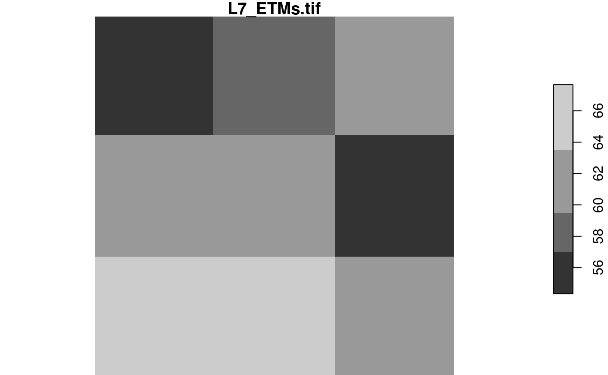
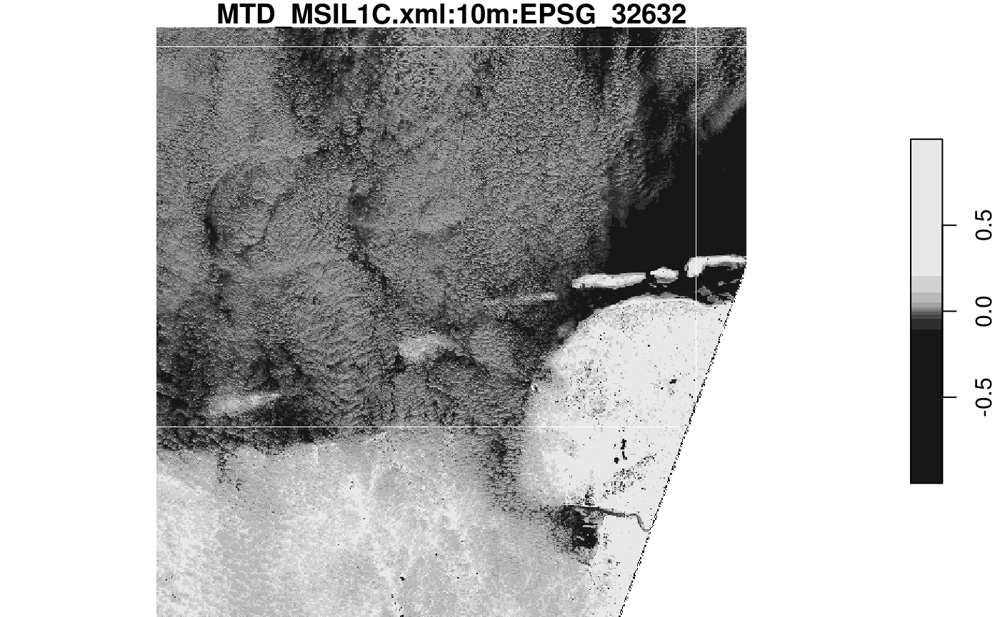

When your imagery or array data easily fits a couple of times in R’s working memory (RAM), consider yourself lucky. This document was not written for you. If your imagery is too large, or for other reasons you want to work with smaller chunks of data than the files in which they come, read on about your options. First we will discuss the low-level interface for this, then the higher level, using stars proxy objects that delay all reading.
To run all of the examples in in this vignette, you must install a package with datasets that are too large (1 Gb) to be held in the stars package. They are in a drat repo, installation is done by
read_stars has an argument called RasterIO which controls how a GDAL dataset is being read. By default, all pixels and all bands are read in memory. This can consume a lot of time and require a lot of memory. Remember that your file may be compressed, and that pixel values represented in the file by bytes are converted to 8-byte doubles in R.
The reason of using RasterIO for this is that the parameters we use are directly mapped to the GDAL RasterIO function used (after adapting the 1-based offset index in R to 0-based offset in C++).
We can read a (spatially) rectangular chunk of data by
An example of using RasterIO is
library(stars)
## Loading required package: abind
## Loading required package: sf
## Linking to GEOS 3.5.0, GDAL 2.2.2, PROJ 4.8.0
## Registered S3 method overwritten by 'dplyr':
## method from
## as.data.frame.tbl_df tibble
tif = system.file("tif/L7_ETMs.tif", package = "stars")
rasterio = list(nXOff = 6, nYOff = 6, nXSize = 100, nYSize = 100, bands = c(1,3,4))
(x = read_stars(tif, RasterIO = rasterio))
## stars object with 3 dimensions and 1 attribute
## attribute(s):
## L7_ETMs.tif
## Min. : 23.00
## 1st Qu.: 54.00
## Median : 63.00
## Mean : 62.06
## 3rd Qu.: 73.25
## Max. :235.00
## dimension(s):
## from to offset delta refsys point values
## x 6 105 288776 28.5 +proj=utm +zone=25 +south... FALSE NULL [x]
## y 6 105 9120761 -28.5 +proj=utm +zone=25 +south... FALSE NULL [y]
## band 1 3 NA NA NA NA NULL
dim(x)
## x y band
## 100 100 3Compare this to
st_dimensions(read_stars(tif))
## from to offset delta refsys point values
## x 1 349 288776 28.5 +proj=utm +zone=25 +south... FALSE NULL [x]
## y 1 352 9120761 -28.5 +proj=utm +zone=25 +south... FALSE NULL [y]
## band 1 6 NA NA NA NA NULLand we see that
delta values remain the same,from and to reflect the new area, and relate to the new delta valuesdim(x) reflects the new size, andReading datasets at a lower (but also higher!) resolution can be done by setting nBufXSize and nBufYSize
rasterio = list(nXOff = 6, nYOff = 6, nXSize = 100, nYSize = 100,
nBufXSize = 20, nBufYSize = 20, bands = c(1,3,4))
(x = read_stars(tif, RasterIO = rasterio))
## stars object with 3 dimensions and 1 attribute
## attribute(s):
## L7_ETMs.tif
## Min. : 29.00
## 1st Qu.: 54.00
## Median : 64.00
## Mean : 62.28
## 3rd Qu.: 73.00
## Max. :107.00
## dimension(s):
## from to offset delta refsys point values
## x 2 21 288776 142.5 +proj=utm +zone=25 +south... FALSE NULL [x]
## y 2 21 9120761 -142.5 +proj=utm +zone=25 +south... FALSE NULL [y]
## band 1 3 NA NA NA NA NULLand we see that in addition:
delta (raster cell size) values have increased a factor 5, because nBufXSize and nBufYSize were set to values a factor 5 smaller than nXSize and nYSize
from and to reflect the new area, but relate to the new delta cell size valuesWe can also read at higher resolution; here we read a 3 x 3 area and blow it up to 20 x 20:
rasterio = list(nXOff = 6, nYOff = 6, nXSize = 3, nYSize = 3,
nBufXSize = 100, nBufYSize = 100, bands = 1)
x = read_stars(tif, RasterIO = rasterio)
dim(x)
## x y
## 100 100
plot(x)
The reason we “see”" only three grid cells is that the default sampling method is “nearest neighbour”. We can modify this by
rasterio = list(nXOff = 6, nYOff = 6, nXSize = 3, nYSize = 3,
nBufXSize = 100, nBufYSize = 100, bands = 1, resample = "cubic_spline")
x = read_stars(tif, RasterIO = rasterio)
dim(x)
## x y
## 100 100
plot(x)The following methods are allowed for parameter resample:
resample |
method used |
|---|---|
nearest_neighbour |
Nearest neighbour (default) |
bilinear |
Bilinear (2x2 kernel) |
cubic |
Cubic Convolution Approximation (4x4 kernel) |
cubic_spline |
Cubic B-Spline Approximation (4x4 kernel) |
lanczos |
Lanczos windowed sinc interpolation (6x6 kernel) |
average |
Average |
mode |
Mode (selects the value which appears most often of all the sampled points) |
Gauss |
Gauss blurring |
All these methods are implemented in GDAL; for what these methods exactly do, we refer to the GDAL documentation or source code.
Stars proxy objects take another approach: upon creation they contain no data at all, but only pointers to where the data can be read. Data is only read when it is needed, and only as much as is needed: if we plot a proxy objects, the data are read at the resolution of pixels on the screen, rather than at the native resolution, so that if we have e.g. a 10000 x 10000 Sentinel 2 (level 1C) image, we can open it by
granule = system.file("sentinel/S2A_MSIL1C_20180220T105051_N0206_R051_T32ULE_20180221T134037.zip", package = "starsdata")
s2 = paste0("SENTINEL2_L1C:/vsizip/", granule, "/S2A_MSIL1C_20180220T105051_N0206_R051_T32ULE_20180221T134037.SAFE/MTD_MSIL1C.xml:10m:EPSG_32632")
(p = read_stars(s2, proxy = TRUE))
## stars_proxy object with 1 attribute in file:
## $`MTD_MSIL1C.xml:10m:EPSG_32632`
## [1] "SENTINEL2_L1C:/vsizip//home/travis/R/Library/starsdata/sentinel/S2A_MSIL1C_20180220T105051_N0206_R051_T32ULE_20180221T134037.zip/S2A_MSIL1C_20180220T105051_N0206_R051_T32ULE_20180221T134037.SAFE/MTD_MSIL1C.xml:10m:EPSG_32632"
##
## dimension(s):
## from to offset delta refsys point values
## x 1 10980 3e+05 10 +proj=utm +zone=32 +datum... NA NULL [x]
## y 1 10980 6e+06 -10 +proj=utm +zone=32 +datum... NA NULL [y]
## band 1 4 NA NA NA NA NULLand this happens instantly, because no data is read. When we plot this object,
## user system elapsed
## 2.244 0.908 2.154This takes only around 1 second, since only those pixels are read that can be seen on the plot. If we read the entire image in memory first, as we would do with
then only the reading would take over a minute, and require 5 Gb memory.
We can select attributes as with regular stars objects, by using the first argument to [:
x = c("avhrr-only-v2.19810901.nc",
"avhrr-only-v2.19810902.nc",
"avhrr-only-v2.19810903.nc",
"avhrr-only-v2.19810904.nc",
"avhrr-only-v2.19810905.nc",
"avhrr-only-v2.19810906.nc",
"avhrr-only-v2.19810907.nc",
"avhrr-only-v2.19810908.nc",
"avhrr-only-v2.19810909.nc")
file_list = system.file(paste0("netcdf/", x), package = "starsdata")
y = read_stars(file_list, quiet = TRUE, proxy = TRUE)
names(y)
## [1] "sst" "anom" "err" "ice"
y["sst"]
## stars_proxy object with 1 attribute in file:
## $sst
## [1] "NETCDF:\"/home/travis/R/Library/starsdata/netcdf/avhrr-only-v2.19810901.nc\":sst"
## [2] "NETCDF:\"/home/travis/R/Library/starsdata/netcdf/avhrr-only-v2.19810902.nc\":sst"
## [3] "NETCDF:\"/home/travis/R/Library/starsdata/netcdf/avhrr-only-v2.19810903.nc\":sst"
## [4] "NETCDF:\"/home/travis/R/Library/starsdata/netcdf/avhrr-only-v2.19810904.nc\":sst"
## [5] "NETCDF:\"/home/travis/R/Library/starsdata/netcdf/avhrr-only-v2.19810905.nc\":sst"
## [6] "NETCDF:\"/home/travis/R/Library/starsdata/netcdf/avhrr-only-v2.19810906.nc\":sst"
## [7] "NETCDF:\"/home/travis/R/Library/starsdata/netcdf/avhrr-only-v2.19810907.nc\":sst"
## [8] "NETCDF:\"/home/travis/R/Library/starsdata/netcdf/avhrr-only-v2.19810908.nc\":sst"
## [9] "NETCDF:\"/home/travis/R/Library/starsdata/netcdf/avhrr-only-v2.19810909.nc\":sst"
##
## dimension(s):
## from to offset delta refsys point values
## x 1 1440 0 0.25 NA NA NULL [x]
## y 1 720 90 -0.25 NA NA NULL [y]
## zlev 1 1 0 [m] NA NA NA NULL
## time 1 9 1981-09-01 1 days POSIXct NA NULLNote that this selection limits the reading from 4 to 1 subdataset from all 9 NetCDF files.
Another possibility is to crop, or select a rectangular region based on a spatial object. This can be done by passing a bbox object, or an sf, sfc or stars object from which the bounding box will be taken. An example:
bb = st_bbox(c(xmin = 10.125, ymin = 0.125, xmax = 70.125, ymax = 70.125))
ysub = y[bb]
st_dimensions(ysub)
## from to offset delta refsys point values
## x 41 281 0 0.25 NA NA NULL [x]
## y 80 360 90 -0.25 NA NA NULL [y]
## zlev 1 1 0 [m] NA NA NA NULL
## time 1 9 1981-09-01 1 days POSIXct NA NULL
class(ysub) # still no data here!!
## [1] "stars_proxy" "stars"
plot(ysub, reset = FALSE) # plot reads the data, at resolution that is relevant
## Warning: ignoring unrecognized unit: percentage
## Warning: ignoring unrecognized unit: percentage
## Warning: ignoring unrecognized unit: percentage
## Warning: ignoring unrecognized unit: percentage
## Warning: ignoring unrecognized unit: percentage
## Warning: ignoring unrecognized unit: percentage
## Warning: ignoring unrecognized unit: percentage
## Warning: ignoring unrecognized unit: percentage
## Warning: ignoring unrecognized unit: percentage
plot(st_as_sfc(bb), add = TRUE, lwd = .5, border = 'red')Some other actions can be carried out on stars_proxy objects, but their effect is delayed until the data are actually needed (plot, write). For instance, range selections on dimensions other than shown above first need data, and can only then be carried out. Such functions are added to the object, in an attribute called call_list:
yy = adrop(y)
yyy = yy[,1:10,1:10,]
class(yyy) # still no data
## [1] "stars_proxy" "stars"
st_dimensions(yyy) # and dimensions not adjusted
## from to offset delta refsys point values
## x 1 1440 0 0.25 NA NA NULL [x]
## y 1 720 90 -0.25 NA NA NULL [y]
## zlev 1 1 0 [m] NA NA NA NULL
## time 1 9 1981-09-01 1 days POSIXct NA NULL
attr(yyy, "call_list") # the name of object in the call (y) is replaced with x:
## [[1]]
## adrop(x = x)
##
## [[2]]
## x[, 1:10, 1:10, ]Doing this allows for optimizating the order in which operations are done. As an example, for st_apply, reading can be done sequential over the dimensions over which the function is applied:
the order of evaluation needs to be reversed: only plot knows which pixels are going to be shown, so that should be in control of how x is subsampled before st_apply is carried out on this subsample.
Fetching the data now involves reading the whole array and then evaluating the call_list on it, sequentially:
(x = st_as_stars(yyy)) # read, adrop, subset
## Warning: ignoring unrecognized unit: percentage
## Warning: ignoring unrecognized unit: percentage
## Warning: ignoring unrecognized unit: percentage
## Warning: ignoring unrecognized unit: percentage
## Warning: ignoring unrecognized unit: percentage
## Warning: ignoring unrecognized unit: percentage
## Warning: ignoring unrecognized unit: percentage
## Warning: ignoring unrecognized unit: percentage
## Warning: ignoring unrecognized unit: percentage
## stars object with 3 dimensions and 4 attributes
## attribute(s):
## sst [°*C] anom [°*C] err [°*C] ice
## Min. :-1.280 Min. :0.480 Min. :0.3 Min. :0.7600
## 1st Qu.:-1.170 1st Qu.:0.620 1st Qu.:0.3 1st Qu.:0.7900
## Median :-1.110 Median :0.690 Median :0.3 Median :0.8100
## Mean :-1.116 Mean :0.665 Mean :0.3 Mean :0.8063
## 3rd Qu.:-1.060 3rd Qu.:0.720 3rd Qu.:0.3 3rd Qu.:0.8200
## Max. :-0.950 Max. :0.770 Max. :0.3 Max. :0.8500
## dimension(s):
## from to offset delta refsys point values
## x 1 10 0 0.25 NA NA NULL [x]
## y 1 10 90 -0.25 NA NA NULL [y]
## time 1 9 1981-09-01 1 days POSIXct NA NULLFor the sentinel 2 data, band 4 represents NIR and band 1 red, so we can compute NDVI by
# S2 10m: band 4: near infrared, band 1: red.
ndvi = function(x) (x[4]-x[1])/(x[4] + x[1])
rm(x)
(s2.ndvi = st_apply(p, c("x", "y"), ndvi))
## stars_proxy object with 1 attribute in file:
## $`MTD_MSIL1C.xml:10m:EPSG_32632`
## [1] "SENTINEL2_L1C:/vsizip//home/travis/R/Library/starsdata/sentinel/S2A_MSIL1C_20180220T105051_N0206_R051_T32ULE_20180221T134037.zip/S2A_MSIL1C_20180220T105051_N0206_R051_T32ULE_20180221T134037.SAFE/MTD_MSIL1C.xml:10m:EPSG_32632"
##
## dimension(s):
## from to offset delta refsys point values
## x 1 10980 3e+05 10 +proj=utm +zone=32 +datum... NA NULL [x]
## y 1 10980 6e+06 -10 +proj=utm +zone=32 +datum... NA NULL [y]
## band 1 4 NA NA NA NA NULL
## call list:
## [[1]]
## st_apply(X = X, MARGIN = c("x", "y"), FUN = ndvi)
system.time(plot(s2.ndvi)) # read - compute ndvi - plot
## Warning in st_as_stars.stars_proxy(x, downsample = downsample): deferred
## processes applied to downsampled image(s)
## user system elapsed
## 2.016 0.852 1.896